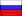

Таблица рейтинга профессиональных команд Dota 2
Рейтинг формируется исходя из множества факторов. Ключевую роль в топе играют показатели завоеванных титулов на турнирах, а также винрейт (% побед)
| Место | Команда | Всего игр | WINRATE | Поражений | Рейтинг |
| 1 | NewBee | 580 | 58% | 585.0 | 270.0 |
| 2 | Liquid | 575 | 61% | 1350.0 | 2,405 |
| 3 | LGD.cn | 750 | 59% | 202.5 | 2,311 |
| 4 |  Virtus.Pro | 894 | 52% | 2295.0 | 2,150 |
| 5 | OG | 207 | 65% | 0.0 | 2,145 |
| 6 | LGD.FY | 214 | 54% | 0.0 | 2,134 |
| 7 | Secret | 387 | 67% | 1440.0 | 2,115 |
| 8 |  EG EG | 719 | 63% | 90.0 | 2,111 |
| 9 | IG | 741 | 59% | 0.0 | 2,063 |
| 10 | VG | 729 | 58% | 270.0 | 1,777 |